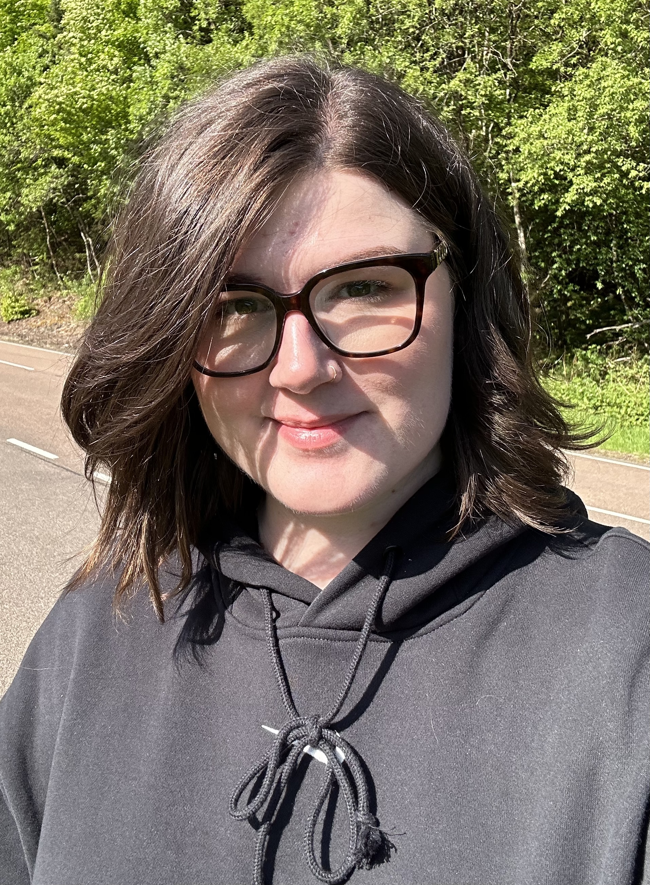

Anne-Katrin Heine

Summary
I am a hardworking and dedicated individual with experience in traffic and transportation engineering, public administration and customer service.
I have just started working towards becoming a Full Stack Developer.
My motto: "The sky is the limit!"
Education
- Master of Engineering, Transportation Engineering - Hochschule für Technik Stuttgart (2020-2022)
- Bachelor of Arts, Business Administration in Public Transport - Hochschule Heilbronn (2016-2020)
- Advanced Technical College Certificate - Andreas-Schneider-Schule (2014-2015)
- Professional training as a Management Assistant in Retail Business - XXXL Bierstorfer (2009-2012)
Work Experience (most recent)
Languages
Skills
Soft Skills
- Problem solving
- Teamwork
- Communication
- Leadership
- Project Management
Hard Skills
- Microsoft Office
- PTV Visum
- PTV Vissim
- BricsCAD
- HTML 5
- CSS
- JavaScript
Awards and Certifications
- Award for Master Thesis from the Business Advisory Board of Faculty B, Hochschule für Technik Stuttgart (2022)
Other
Hobbies
Contact